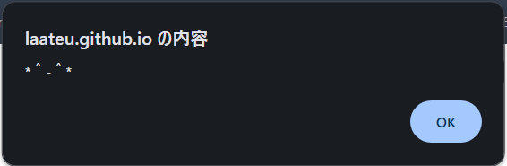
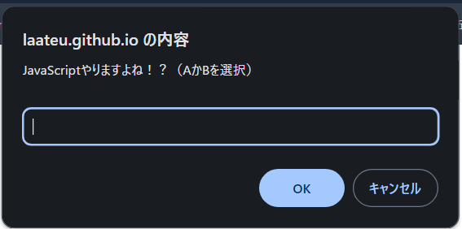

JavaScriptを、勉強しましょう！！！
JavaScriptのちからってすげー！
いまでは JavaScriptでHTMLをつくれるんだと！
…という前置きはさておき，ここはサイトを作った人がJavaScriptを勉強するためのページです．あってるかどうかは保証できませんが，良ければどうぞ．
なにものかのなにものかによるなにものかのための処刑場
JavaScriptのちからってすげー！
いまでは JavaScriptでHTMLをつくれるんだと！
…という前置きはさておき，ここはサイトを作った人がJavaScriptを勉強するためのページです．あってるかどうかは保証できませんが，良ければどうぞ．
ソースをそのままHTMLに直書きしたい場合は，<script>と</script>の間に JavaScriptのソースコードを書きましょう．
ソースコードをHTMLに書かず，ファイルに分けたい場合は<script src="jsファイル">というように，直接ファイルを指定しましょう．ちなみにJavaScriptのスクリプトの拡張子は"js"です．
さて，まずは"Hello World"を表示させましょう．JavaScriptはC言語やPythonとは違い，ターミナル環境で実行できません．そのかわり，自分でHTMLが使える環境があれば普通に組み込めるほか，Web上にはJavaScriptを実行できる環境が多くあるようです．例えば，
というようなサイトがあるようです．話を戻しましょう．JavaScriptでは，出力にalert（アラート）という関数を使います．使い方としては，alert("文字列")というように使うみたいです．これを実行すると，画面上部にアラートとしてポップアップが表示されます．つまり，こんなふうに．
入力には，prompt（プロンプト）関数を使います．prompt("文字列")というように指定すると，説明文の文字列が表示され，下に入力スペースが表示されます．
Hello World を表示させたいのであれば，alert("Hello World")としましょう．ポップアップで，世界に挨拶をしましょう！
プログラミングと言えば，算術演算です．足して引いて，かけて割って…。今回は，これらのプログラミングでは欠かせない要素について学んでいきましょう．
まずは，JavaScript特有の変数について学びましょう．JavaScriptでは，let と呼ばれる値を再代入する事の出来る型と，const と呼ばれる一度値を決めたら変更することのできない定数の二つがあります．